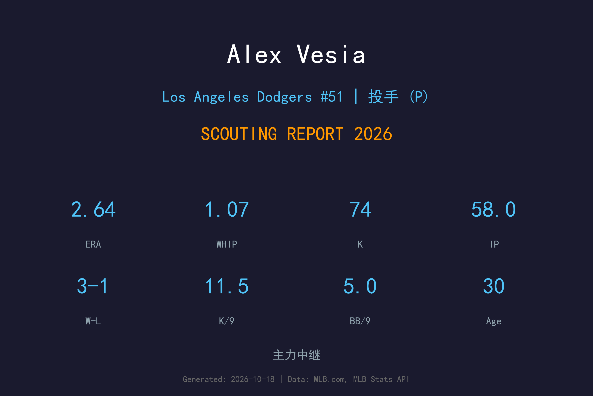
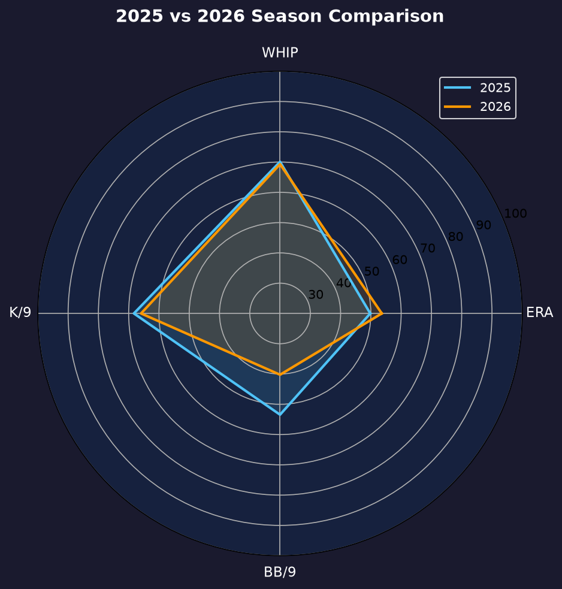
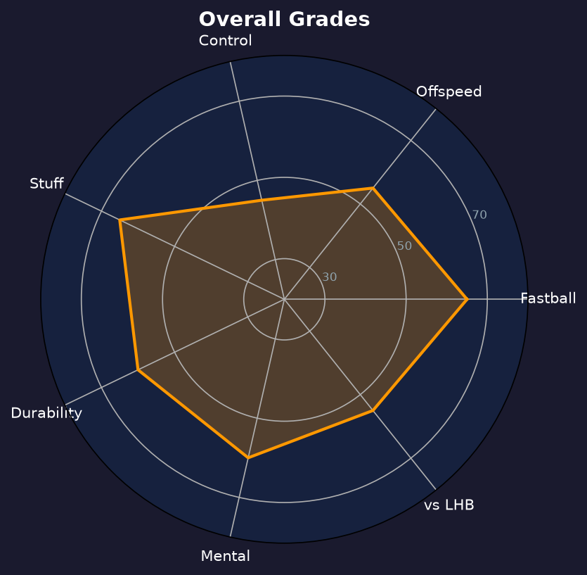

Los Angeles Dodgers #51 | 左投后援 | 左投 / 左打 | 火球左腕

Alex Vesia 是道奇牛棚最倚重的左投 setup man，以超高转速速球与怪异放球点著称。他的球从低肩侧投角度窜出，对左打者几乎是梦魇。
2026年他出赛72场，缴出2.64 ERA、1.07 WHIP、58局74次三振，20次 hold 全队牛棚最多。ERA 从2025年的3.02 再降0.38，已经成为联盟最稳定的第八局人选之一。
30岁的 Vesia 正值后援巅峰期。他的保送率（4.97 BB/9）仍是需要控制的短板，但当他的速球指令在线时，几乎没有打者能舒服地咬中。季后赛5场无失分，再次证明大场面可靠性。
从马林鱼起步，同年被交易至道奇，快速站稳牛棚位置。
作为道奇主力左投后援，季后赛多次登板压制对手左打群。
72场出赛、20次 hold 全队牛棚之最，ERA 连续两年下降。

| 赛季 | G | W-L | ERA | IP | SO | BB | WHIP | SV |
|---|---|---|---|---|---|---|---|---|
| 2025 | 68 | 4-2 | 3.02 | 59.2 | 80 | 22 | 0.99 | 5 |
| 2026 | 72 | 3-1 | 2.64 | 58.0 | 74 | 32 | 1.07 | 3 |
主战球种，占全部配球的 55.8%，均速 92.1 mph。直上直下的四缝线速球，负责抢好球数与建立球数领先，是所有配球的基准。
常用武器，占全部配球的 30.2%，均速 84.4 mph。传统滑球横向位移锐利，是两好球后的主要挥空武器。
辅助配球，占全部配球的 14.0%，均速 82.8 mph。变速球靠与速球的速差取命，主要用来对付反侧打者。
Vesia 的三振率维持在 11.5 K/9 水准（74K/58IP），被打击率仅.146（30安打/58局），显示他的球路极难被扎实咬中。2026年仅被轰4支全垒打，HR/9 0.62 是生涯最佳之一。
他的短板同样明显：32次保送（4.97 BB/9）较2025年的22次明显恶化，WHIP 从0.99升至1.07。当他速球指令失准时，他会陷入 deep count 并被迫用球数解决问题。这也是他季后赛仅被用于特定 matchup 的原因之一。
72场出赛、20次 hold 是道奇牛棚的 workload 王。3-1 战绩、2.64 ERA，仅在5次救援机会中搞砸2次——大部分时间他是球队通往第九局最可靠的桥。连续两年 ERA 下降，Vesia 正走在 elite setup man 的轨道上。

stuff 顶级、控球待修的精英左投 setup man
B+ 级 / 主力牛棚
道奇 2026 季后赛战绩：NLDS 3-1 晋级、NLCS 0-4 止步。
| G | IP | ERA | WHIP | SO | BB | H | HR |
|---|---|---|---|---|---|---|---|
| 5 | 3.1 | 0.00 | 0.90 | 4 | 2 | 1 | 0 |
Alex Vesia 的2027赛季目标明确：把保送率压回 4.0 以下。如果能做到，他将是联盟最完整的 setup man 之一，甚至有能力竞争终结者角色。
2026：72场、2.64 ERA、20HLD——生涯最佳 ERA，确立第八局地位
2027：目标 ERA 2.50 以下、BB/9 ≤4.0，挑战更多救援机会
2028+：若控球持续进步，可转型终结者或顶级 setup man 长约
Alex Vesia 出生于加州 Alpine，2018年被迈阿密马林鱼在第17轮选中。2020年疫情缩短赛季，他登上大联盟，并在同年被交易至洛杉矶道奇——这笔交易后来被视为道奇牛棚近年最成功的操作之一。
在道奇，Vesia 从边缘左投成长为国家队级别的 setup man，2024年随队夺得世界大赛冠军。他以怪异的低肩放球点和活泼的场上个性闻名，是牛棚中最具娱乐性的存在。
场外的 Vesia 热爱钓鱼和公路旅行，常在社交媒体上分享加州沿岸的风景。他的弟弟 Andrew 也是职业棒球投手，兄弟二人时常互相切磋球技。